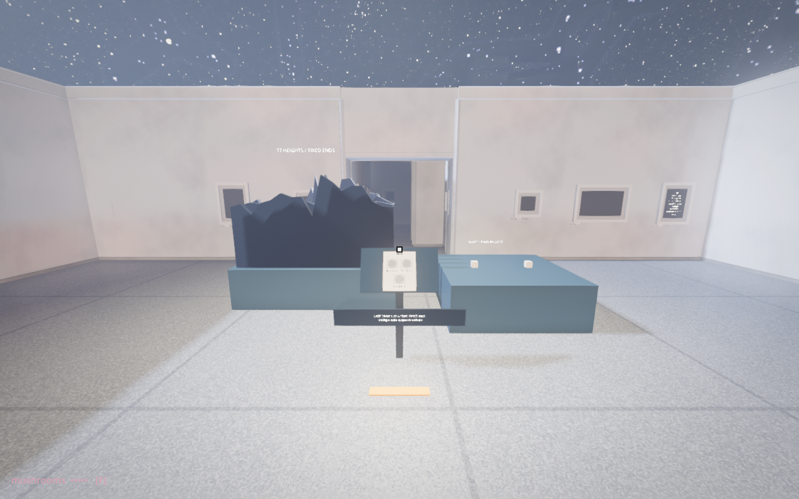

Waiting and a shape
The old Random_Cubes map contained two random object spawners and rows of random profiles. Their pairing returns as a supporting encounter at the end of Random Game.

Two wooden pickup cubes arrive alternately at fixed positions, from three metres above the floor, over a two-metre-square podium. The first wait is one second; subsequent waits are drawn between 0.3 and 1.3 seconds. An arrival replaces the cube in its slot. Holding either cube suspends arrivals and replay. RUN / STOP pauses arrivals; REPLAY restores the arrival clock and sequence, not identical physics.
The profile uses the existing ProfileRandom generator with seventeen samples and pinned ends. PROFILE draws another contour. It is a separate sequence of heights, not a graph of the arrival delays. One encounter asks you to wait through a sequence; the other offers its shape at once.
The irregular horizons sit around 1.7 metres. Matte panels grade from dark at the front to light at the back, so overlapping contours create depth. PROFILE changes all five layers.
86 runtime checks passed. Headset pickup and comfort remain to be verified. The prototype reuses the original grabbable wooden cube and profile generator; its two-slot replacement rule is a new bounded staging, not an exact reconstruction of the old spawner population.
Read the updated hall